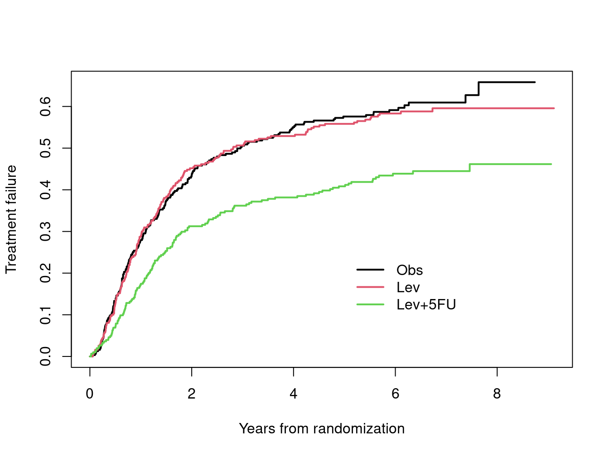
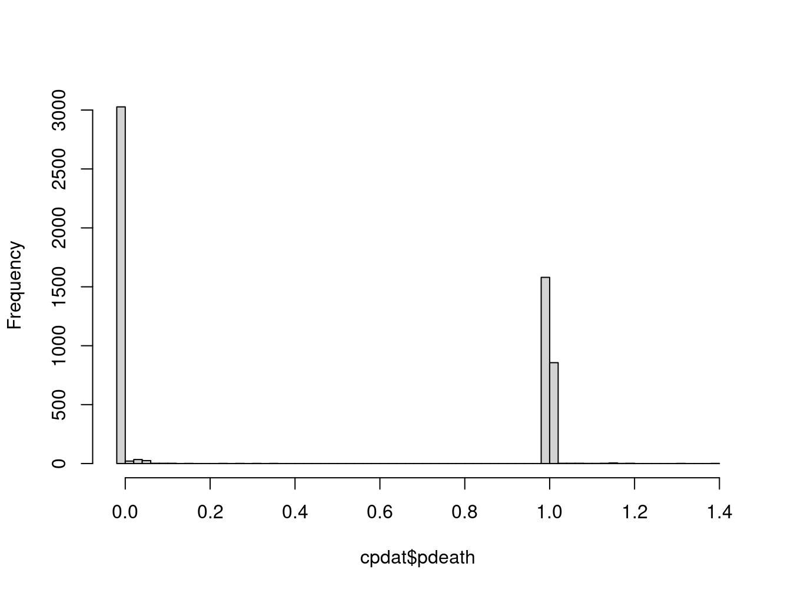
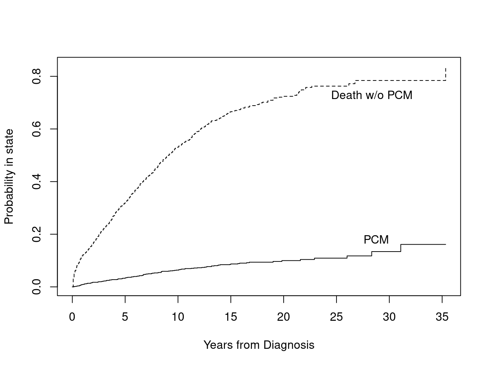

Let \(Y\) be survival time and \(f\) some function of interest, for which we desire to estimate \(E(f(Y))\) over the population. With complete data on each observation’s survival time, we can compute the expectation in the straightforward way as the simple mean \(\sum f(y_i) /n\). Due to censoring, survival data is unfortunately incomplete.
Pseudo-values are based on a simple idea. Suppose the data are incomplete but we have an estimator \(\hat\theta = E(f(Y)\) of the quantity of interest, e.g., \(\theta\) = survival probability at time 45, and \(\hat\theta\) the Kaplan-Meier estimate at time 45. The pseudo-value for \(y_i\) is then defined as
where \(\hat\theta_{-i}\) is defined as the value of the estimate when subject \(i\) is omitted from the sample. As an illustration, evaluate this formula when \(\theta\) is an ordinary mean: \[\begin{align*}
\hat\theta + (n-1)(\hat\theta - \hat\theta_{-i}) &=
\sum_j y_j/n + (n-1)\left( \sum_{j} y_j/n - \sum_{j\ne i} y_j/(n-1) \right)\\
&= \sum_j y_j - \sum_{j\ne i} y_j \\
&= y_i
\end{align*}\]
In this case the pseudo-value has exactly recovered the data value \(y_i\). The idea is to use the pseudo-observations \(\theta_{(i)}\) as a replacement for the incompletely observed data \(y_i\), i.e., as a stand-in for the uncensored data. These pseudo-values are not censored, allowing for ordinary statistical methods to be applied. An good overview of pseudo-value based methods for survival is provided by Andersen and Perme Andersen and Perme (2010).
The pseudo function in the survival package uses values based on the infinitesimal jackknife (IJ), i.e., \[\begin{equation}
\tilde\theta_{(i)} = \hat\theta + n\frac{\partial \hat\theta}{\partial w_i}
\end{equation}\]
Why use IJ based pseudo-values instead of jackknife based values?
The largest advantage is computational; IJ values can be assembled much more quickly.
The survival package already makes extensive use of IJ values to compute robust variance estimates, so these naturally fit into that framework. We take advantage of existing test suites to ensure accurate computations.
Both estimates are linear approximations to a functional surface, something nicely pointed out by Efron Efron (1982): the IJ is a tangent plane to the surface at its center and the jackknife a secant plane.
As such, they have the property that the average of the IJ pseudo-values will recover the starting estimate, mean\((\tilde\theta_{(i)}) = \hat\theta\). The choice of \(n\) for the IJ based pseudo-value makes the computation for an ordinary mean exact, as was shown above for \(n-1\) and the jackknife pseudo-value, and in fact Efron argues that the use of \(n-1\) is somewhat arbitrary, i.e., \(\theta\) statistics other than the mean might be more exact using \(n\), \(n+1\) or some other multiplier. The largest potential deficit of the IJ based approach is that the literature is small — most of the direct examinations have focused on jackknife based values. Parner et. al Parner, Andersen, and Overgaard (2021) examine the IJ approach in detail, and show that they have the same asymptotic properties as the jackknife pseudo-values. Examples show that the numerical difference between the two is minuscule, with the possible exception of large outliers.
2 Residual mean survival time
We will start with one of the more compelling uses, which provides modeling tools for the mean time spent in a state. For any positive probability distribution, a well known identity is that the mean is equal to the area under the survival curve.
This extends to the multi-state case, where the expected time in state will be equal to the area under the P(state) curve for that state.
Since the Kaplan-Meier gives an unbiased estimate of \(S\), we can use the area under the KM to estimate the mean time to death. However, since the entire \(S(t)\) curve is usually not available, i.e., the KM terminates before reaching 0, we instead estimate the restricted mean survival time (RMST), using the area under the KM up to some specified point \(\tau\). This is interpreted as the expected number of life years, out of the first \(\tau\) years since initiation. If \(\tau=10\) and the area under the curve were 8.1, the relevant phrase would be an “expected lifetime of 8.1 out of the next 10 years”. Other common labels the sojourn time, or for a multi-state model, the restricted mean time in state (RMTS). The sojourn time for all states must sum to \(\tau\), i.e. everyone has to be somewhere. Common choices for \(\tau\) are either a fixed time of interest such as 2, 5 or 10 years, the last observed event time, or the point at which any one of the curves has no subjects.
Here is a simple example using the lung cancer data set.
The strongest predictor in the data set is ECOG performance score, which has levels of 0-3. For a single categorical predictor such as this, it is easy to obtain the RMST and its standard error directly from the print routine for survfit. We can also do this with pseudo-values, which allow for a multivariate model. The result shows a loss of about .26 years for each 1 point increase in the performance score, and about .32 years longer RMST for females.
pmean <-pseudo(lfit0, times=2.5, type="RMST")ldata <-data.frame(lung, pmean=c(pmean), id=1:nrow(lung)) afit1 <-lm(pmean ~ ph.ecog + sex + age, data=ldata)round(summary(afit1)$coefficients, 3)#> Estimate Std. Error t value Pr(>|t|)#> (Intercept) 1.192 0.379 3.144 0.002#> ph.ecog -0.255 0.068 -3.738 0.000#> sex 0.322 0.099 3.260 0.001#> age -0.006 0.005 -1.120 0.264
The IJ residuals for observations that are censored early in the study are of necessity small, as they have less opportunity to affect the results, which in turn means that the pseudo-values are not equivariant. An observation censored before the first event has residual 0, so its pseudo-value has no variance at all. In such a case theory argues for using White’s variance estimate for the linear model fit, which accounts for possible heteroscedasticity. This is the same as the “working independence” estimate of a GEE model, or the variance estimate from a survey sampling approach. We compute both of these below.
afit2 <-geese(pmean ~ ph.ecog + sex + age, data=ldata, subset = (!is.na(ph.ecog)))round(summary(afit2)$mean, 3)#> estimate san.se wald p#> (Intercept) 1.192 0.389 9.399 0.002#> ph.ecog -0.255 0.067 14.526 0.000#> sex 0.322 0.099 10.519 0.001#> age -0.006 0.006 1.217 0.270ldesign <-svydesign(data=ldata, id=~id, weights=NULL,variables=~ . -id)afit3 <-svyglm(pmean ~ ph.ecog + sex + age, design=ldesign)round(summary(afit3)$coefficients, 3)#> Estimate Std. Error t value Pr(>|t|)#> (Intercept) 1.192 0.390 3.059 0.002#> ph.ecog -0.255 0.067 -3.803 0.000#> sex 0.322 0.100 3.236 0.001#> age -0.006 0.006 -1.101 0.272
The estimated coefficients will be identical for all three approaches, as evidenced above. In this particular case the robust and normal standard errors hardly differ, which we have found to be the usual case when there is a single pseudo-value per subject. When there are pseudo-values at multiple reporting times, and thus multiple observations per subject, then the correction becomes essential. Deficiencies in R’s geese function lead us to use the survey sampling approach from here forward, in particular that any missing values cause geese to fail, the input data is required to be sorted by id, and that standard extraction functions such as coef and vcov have not been implemented. The survey package requires that the design be specified in advance; the resulting object acts as the data for subsequent fits.
The validity of pseudo-values relies on an assumption of non-informative censoring. When censoring is uninformative within strata, but not overall, a solution is to base the pseudo-values on the per-stratum survival curves. For example, the lung data set comes from a multi-center study, and contains an identifier for the institution from which the subject was recruited. We might want to adjust for the possibility that different institutions recruit from different patient populations, with different overall survival. If those institutions had different median follow-up times as well as differential survival, this would introduce informative censoring. (Differential follow-up of quite common in multi-center studies; some will join late due to administrative delays.)
# There is 1 missing value for inst so pseudo by default will have 227 values instead of 228# When creating pmean4, you need to put the values in the correct spot.# Specifying na.exclude expands the results to have the proper lengthlfit4 <-survfit(Surv(time/365.25, status) ~ inst, data=lung, na.action=na.exclude)pmean4 <-pseudo(lfit4, time=2.5, type="auc")ldata$pmean4 <-c(pmean4)afit4a <-lm(pmean4 ~ ph.ecog + sex + age, data=ldata)# survey package does not allow a missing strata, and one obs in the lung data# has institution missingtemp <-subset(ldata, !is.na(inst))ldesign4 <-svydesign(data=temp, id=~id, weights=NULL, strata=~inst,variables=~ .-id -inst)afit4b <-svyglm(pmean4 ~ ph.ecog + sex + age, design=ldesign4)round(summary(afit4a)$coefficients, 3)#> Estimate Std. Error t value Pr(>|t|)#> (Intercept) 1.085 0.387 2.805 0.005#> ph.ecog -0.276 0.070 -3.941 0.000#> sex 0.448 0.101 4.429 0.000#> age -0.006 0.006 -1.108 0.269round(summary(afit4b)$coefficients[1:4,], 3)#> Estimate Std. Error t value Pr(>|t|)#> (Intercept) 1.085 0.377 2.876 0.004#> ph.ecog -0.276 0.069 -4.006 0.000#> sex 0.448 0.099 4.504 0.000#> age -0.006 0.006 -1.112 0.267
It is interesting that correct variance is somewhat smaller than the simple glm result, in this case.
3 Survival and probability in state
3.1 AML data
As a first case for this endpoint look at a simple survival data set, the well known AML study with 23 subjects, which records the time to relapse for patients with acute myelogenous leukemia. Relapse times range from 5 to 48 months, 5 of the 23 patient times are censored. Get the pseudo-values for 12 and 24 month survival.
Both the matrix of IJ values from resid and the matrix of IJ pseudo-values from the pseudo function have one row per subject and one column per reporting time. The first censoring is at 13 months, and so at the first reporting time of 12 months the pseudo-values behave exactly like a mean, and have recaptured the (uncensored) 0/1 response of “relapse within 12 months”. At 24 months, after censoring enters, the pseudo-values are no longer constrained to lie in \((0,1)\).
What happens if we use these values in an ordinary regression? The data.frame argument causes the values to be returned in long form as a data.frame.
The regressions have exactly reproduced the KM values at 12 and 24 months, as expected, and the estimated standard errors almost match those from the survfit function. The robust (IJ) variance for the Kaplan-Meier, i.e. the sum of squared IJ values, can in fact be shown to exactly equal the Greenwood estimate of variance for a KM (Anne Eaton, personal communication). The difference above is due to the fact that the lm function uses \(n-1\) rather than \(n\) in computing a variance.
A natural follow-on is to look at covariates. In the AML data set the covariate x denotes the two treatment arms.
cfit3 <-coxph(Surv(time, status) ~x, data=aml)cfit3#> Call:#> coxph(formula = Surv(time, status) ~ x, data = aml)#> #> coef exp(coef) se(coef) z p#> xNonmaintained 0.9155 2.4981 0.5119 1.788 0.0737#> #> Likelihood ratio test=3.38 on 1 df, p=0.06581#> n= 23, number of events= 18pdata <-cbind(pdata, x= aml$x) # original data + pseudo-valueslfit3 <-lm(pseudo ~ x +factor(time), data=pdata)summary(lfit3)$coefficients#> Estimate Std. Error t value Pr(>|t|)#> (Intercept) 0.8574050 0.1245665 6.883111 1.900447e-08#> xNonmaintained -0.2266929 0.1418401 -1.598229 1.173154e-01#> factor(time)24 -0.1925466 0.1417060 -1.358775 1.813030e-01sfit3 <-survfit(cfit3, newdata=list(x=c("Maintained", "Nonmaintained")))summary(sfit3, times=c(12,24))#> Call: survfit(formula = cfit3, newdata = list(x = c("Maintained", "Nonmaintained")))#> #> time n.risk n.event survival1 survival2#> 12 18 6 0.841 0.648#> 24 11 4 0.706 0.419
The above code contains a lot of ideas. First, the Cox model estimates that the subjects on the no maintenance arm have a hazard rate of about 2.5 fold higher than the maintenance arm, \(p=.09\). Second, a linear model using pseudo-values has estimated the absolute probability of no recurrence, at 12 and 24 months, to be about .23 lower for the no maintenance group, \(p=.12\); conversely the probability of recurrence is .23 higher. Last is a plot comparing the curves. The overall probabilities of recurrence are gathered into a table below.
One advantage of the linear model is that the pseudo-values are direct estimates of a probability, and so may be easier to communicate to study participants than a hazards ratio. The linear model contains the strong assumption that the difference in survival is the same at times 12 and 24, the Cox model the equally strong one that hazards are proportional across all time points. Of potentially more consequence, the pseudo-value has two observations for each subject, leading to correlated data. We can correct for this using a robust sandwich estimator either via survey sampling or a GEE argument. These are shown below. The geese function has the unfortunate feature that correct standard errors require that all of the observations for a subject are in contiguous rows of the input data. No error message arises if this does not hold, only an incorrect result.
# Naive lmsummary(lfit3)$coefficients#> Estimate Std. Error t value Pr(>|t|)#> (Intercept) 0.8574050 0.1245665 6.883111 1.900447e-08#> xNonmaintained -0.2266929 0.1418401 -1.598229 1.173154e-01#> factor(time)24 -0.1925466 0.1417060 -1.358775 1.813030e-01##survey# When an id is constructed rather than supplied, pseudo() purposely gives# it a non-standard name to avoid confusion with any user's variable names.# But that name is a PITA to use in formulasflag <-toupper(names(pdata))=='(ID)'pdata$id <- pdata[,flag] pdesign <-svydesign(id=~ id, varibles=~ pseudo + x + time, weights=NULL,data=pdata)sfit <-svyglm(pseudo ~ x +factor(time), design=pdesign)summary(sfit)$coefficients#> Estimate Std. Error t value Pr(>|t|)#> (Intercept) 0.8574050 0.09337136 9.182741 1.300627e-08#> xNonmaintained -0.2266929 0.17489231 -1.296186 2.096699e-01#> factor(time)24 -0.1925466 0.08847305 -2.176330 4.168743e-02## GEE 1gfit1 <-geese(pseudo ~ x +factor(time), data=pdata, id= id) # wrong answersummary(gfit1)$mean#> estimate san.se wald p#> (Intercept) 0.8574050 0.09352952 84.037788 0.00000000#> xNonmaintained -0.2266929 0.13604793 2.776465 0.09565912#> factor(time)24 -0.1925466 0.13700721 1.975080 0.15990964## GEE 2pdata <- pdata[order(pdata$id),] # group id values to be togethergfit2 <-geese(pseudo ~ x +factor(time), data=pdata, id= id)summary(gfit2)$mean#> estimate san.se wald p#> (Intercept) 0.8574050 0.09131899 88.155586 0.00000000#> xNonmaintained -0.2266929 0.17104806 1.756466 0.18506593#> factor(time)24 -0.1925466 0.08652835 4.951706 0.02606494
All of the approaches give the same coefficient estimates, differing only in the estimated standard error.
3.2 Colon cancer
Now work with a larger data set, using time to failure (recurrence or death) in the colon cancer study. The data set has 2*929 observations, the first set for time to recurrence and the second for time to death. For anyone without recurrence, their follow-up time for recurrence is equal to their follow-up time for death.
cdata <-subset(colon, etype==1, -etype) # time to recurrencetemp <-subset(colon, etype==2)cdata$status <-pmax(cdata$status, temp$status)trtsurv <-survfit(Surv(time, status) ~ rx, cdata, id=id)plot(trtsurv, fun="event", xscale=365.25, col =1:3, lwd=2,xlab="Years from randomization", ylab="Treatment failure")legend(5*365, .25, levels(cdata$rx), col=1:3, lwd=2, bty='n')

ccox <-coxph(Surv(time, status) ~ rx + sex + age + extent + node4+ obstruct + perfor + adhere, data=cdata)
The graph shows that the Levamisole + 5-FU treatment are is markedly superior to either observation or 5-FU alone (the standard treatment at the time). There are few further events after 4–5 years and the curves flatten out. Having 4 or more positive lymph nodes and greater local spread of the disease are also potent predictors. Now look at pseudo-values for the data.
Most users will prefer a model for the risk of death, i.e., for pseudo-values based on the probability of death \(1- S(t)\). It is easy to show that these are simply \(1- p(S)\) where \(p(S)\) are the pseudo-values for \(S\). This was saved as the variable pdeath. We then merge the pseudo data, which has multiple rows per subject, with the original data, by the subject identifier id found in the colon cancer data set. Because id was specified in the survfit call it carries through and properly labels the pseudo-values.
hist(cpdat$pdeath, nclass=50, main=NULL)

This shows that for a large data set with moderate censoring, the pseudo-values are clustered around 0 and 1, mimicking binomial data. To assess survival, which values should we use: year 4 alone, 2 or 3 of the 6 years, or all of them? One important consideration for all of this is the choice of a transformation function \(f\), where we assume that \(E(y) \approx f(\eta) + \epsilon\). (Generalized linear model literature normally focuses on the function \(g= f^{-1}\).)
The ideal function \(f\) will
Transform treatment effects to a common scale over time. That is, a separate intercept for each time point will suffice. No interactions between covariates and time are needed.
Cause multivariate effects to be additive. That example, the effect of treatment is the same for those with and without 4+ positive lymph nodes. No between covariate interactions are needed.
Normalize the variance so that \(\epsilon\) is constant across time and across covariates. Alternatively, choose a distribution that properly maps between the predicted mean and variance.
Bound predicted values to the range of 0–1.
Satisfying all four of these at once is likely to be impossible. Logistic regression, most user’s immediate response to estimation of a yes/no question, fails directly. First, it does not accommodate response values outside the range of 0–1, and secondly the variance for a predicted value near 0 or 1 is assumed to drop to zero. The maximum value of 1.4 for cpdat\$pdeath fails both of these.
As a first pass, look at the between curve difference for the other arms vs. 5-FU across time, based on the Kaplan-Meier estimates. For this particular data set and these time points, absolute difference between the curves is more stable across time than logit differences.
temp1 <-summary(trtsurv, times=1:6*365.25)temp2 <-matrix(temp1$surv, nrow=6)temp3 <-rbind("Obs vs 5FU"= temp2[,1]- temp2[,2],"Lev vs 5FU"= temp2[,3]- temp2[,2]) cat("absolute difference\n")#> absolute differenceround(temp3*100, 1)#> [,1] [,2] [,3] [,4] [,5] [,6]#> Obs vs 5FU 0.8 1.6 0.1 -2.1 -1.8 -0.8#> Lev vs 5FU 11.3 13.9 14.5 14.7 15.0 14.4#cat("logit difference\n") #> logit differencelogit <-function(x) log(1/(1-x))temp4 <-rbind("Obs vs 5FU"=logit(temp2[,1])-logit(temp2[,2]),"Lev vs 5FU"=logit(temp2[,3])-logit(temp2[,2]))round(temp4*100, 1)#> [,1] [,2] [,3] [,4] [,5] [,6]#> Obs vs 5FU 2.7 3.6 0.2 -3.9 -3.1 -1.4#> Lev vs 5FU 49.9 36.8 33.6 32.7 31.3 28.5
Based on this, do a first model with linear effects. The next question is which time points to use, and how many. First, look at 6 models with a single time point, each containing treatment, extent and nodes, but summarize only the levamisole coefficient.
If you are only going to use one time point, then a robust variance is apparently not necessary, at least in this case, and the best time point in terms of \(z\) statistic or power, by an admittedly small margin, is 4–5 years when the results have largely matured. This happens to be the largest estimated gain for levamisole, reducing the absolute failure rate by 16%. A robust variance is called for not only when there are multiple observations per subject, but in the case of heteroscedasticity, however. We should therefore not be too quick to declare it unnecessary based on a single example.
Now consider combination of times 2,4,6, or all 6 time points.
For the coefficient of interest, the treatment effect, the use of 1, 3, or 6 time points hardly changes the t-statistic or the estimate. All the remaining coefficients are also fairly stable. The year coefficients show the baseline rate creeping up.
3.2.0.1 Logit link
Although a linear link was indicated for the colon data, the logit link is more common. Directly using it will fail, however consider the following
tryCatch( svyglm(pdeath ~rx + extent + node4 +factor(year), design=cpdesign,family=gaussian(link ="logit")),error=function(e) e)#> <simpleError in family$linkfun(mustart): Value -0.000235585 out of range (0, 1)>
The same out of range error occurs with the simple glm function. The issue is that the glm function uses the logit link of \(f(x) = \log(x/(1-x))\) to create starting estimates for the iteration, and values outside of \((0, 1)\) lead to a missing value. (That is actually the only place the link is used.) Two choices are to give explicit initial values, or to define our own link. Here is an example of the first, i.e., give starting estimates which are “good enough”.
A problem with this is that if we add a subset argument, then the starting estimate also needs to be explicitly trimmed down. An alternate is to define our own link function, based on the code found in the documentation for family, or on examination of the glm make.link function. We call the resulting function blogit for “bounded logit”, and have included it in the survival package.
Though common, results from the logit link are harder to interpret than the linear link. The latter estimates that Levamisole+5FU will reduce the probability of death by 14%, on average, for time points from years 2–6, while the logit link predicts an exp(-.645)= .52 odds of relapse.
3.2.0.2 Complementary log-log link
If a Cox model holds, then \[\begin{align*}
1 - F(t) &= S(t) = e^{- \Lambda_0(t) e^{(X\beta)}} \\
\log(-\log(S(t)) &= \log[\Lambda_0(t)] + X \beta
\end{align*}\]
which motivates using the following link function.
And indeed, the coefficients of the glm model closely mimic a coxph fit.
4 Competing risks
In a competing risks situation, let \(p_j(t)\) be the probability of being in state \(j\) at time \(t\). The Fine-Gray model assumes that \(1- p_1(t) = exp(-exp(\beta_0(t) + \beta X))\) or equivalently that \(\log(-\log(1- p_1(t))) = \beta_0(t) + \beta X\), where outcome \(j=1\) is assumed to be the event of interest. We can use pseudo-values from an Aalen-Johansen estimate of \(p_j\), along with a complimentary log-log link GLM, to estimate the same quantity. We will use the mgus2 data set, which has been used to illustrate competing risks elsewhere in the survival vignettes.
mdata <- mgus2mdata$etime <-with(mdata, ifelse(pstat==1, ptime, futime))mdata$event <-factor(with(mdata, ifelse(pstat==1, 1, 2*death)), 0:2,c("censor", "PCM", "Death"))mdata$age10 <- mdata$age/10# age in decadesmsurv <-survfit(Surv(etime, event) ~1, data=mdata, id=id)plot(msurv, lty=1:2, xscale=12, xlab="Years from Diagnosis", ylab="Probability in state")text(c(345, 340), c(.18, .73), c("PCM", "Death w/o PCM"))

At 30 years post diagnosis approximately 13% of the subjects have experienced a plasma cell malignancy (PCM), while 78% have died without PCM. Fit the model using either 30 time point for the pseudo-values (years 1–30), 10 (every 3 years) or 5 (every 6). The pseudo-value matrix has 3 columns corresponding to each of the 3 states, we focus on the PCM outcome (column).
We see that using pseudo-values with a complimentary log-log link returns coefficients that are very close to the formal Fine-Gray method, within 1/5 of a standard error or less, but with somewhat larger estimated standard errors. The intercept terms from the GLM model (not shown) estimate a cumulative baseline hazard. Other links are of course possible, and may be more appropriate in a given situation.
One lack in the pseudo-value approach is that it does not extend to time-dependent covariates, unlike the Fine-Gray model. A second concern is that in a data set with left-truncation, it has been shown that the final regression coefficients will be biased whenever the truncation is covariate dependent (personal communication, PK Andersen).
5 References
Andersen, P. K., and M. P. Perme. 2010. “Pseudo-Observations in Survival Analysis.”Stat Methods Medical Research 19: 71–99.
Efron, B. 1982. The Jackknife, the Bootstrap and Other Resampling Plans. Philadelphia: SIAM.
Parner, E. T., P. K. Andersen, and M. Overgaard. 2021. “Pseudo-Observations for Competing Risks Data with Left Truncation.”In Submission.